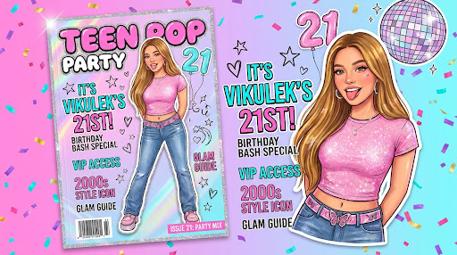

Викулек
Журнал об одной очень любимой девочке
Обложка · стр. 3
Двадцать один
год одной
звёздочке
Подарочный выпуск ручной сборки

Эксклюзивный подарочный спецвыпуск: 5 любимых подруг, секретные кассеты, космические архивы NASA, пушистый оракул и тайные воспоминания.
Содержание
Что внутри
- 01Клуб Любимых ПодругСоня, Полина, Кира, Вилена, Нютик04
- 02Послание «Милка»Кассета Side A / Side B, ПИН 160509
- 03Древо Семьи · РусиновоСкрапбук, портрет маслом, ретро-ТВ14
- 04Оракул Пушистых СилВильзивул · Макс · Абадон21
- 05Космос NASA, 2005Созвездие Скорпиона и звездопад27
- 06Секретики-ПистолетикиСейф Жулика и кодовое слово33
- 07Медиа-СтудияПисьмо в 22 года и полароид38
ВИКУЛЕК №21Содержание03
Глава 01 · стр. 04
Клуб любимых подруг
Пять человек, которые всегда рядом
Соня, Полина, Кира, Вилена и Нютик — не просто список имён, а полноценный клуб со своими традициями, тостами и сценарием вечеринки «Party Mode 4».
У каждой — своя страница: фотография, CD-микстейп, тост и роль в общем сценарии. Переверните полароид, чтобы услышать поздравление.
Соберите все пять карточек — клуб открывается целиком, как вкладыш в журнале.
«Викулек! С днём рождения, моя дорогая! Желаю тебе океан счастья, горы смеха и море любви!» — Соня, тост на странице 05

ВИКУЛЕК №21Клуб подруг05
Глава 02 · стр. 09
Послание «Милка»
Секретная кассета, сторона A и B
Кассета вложена в номер как физический подарок: сторона A — голос, сторона B — письмо.
Чтобы прослушать сторону B, нужен четырёхзначный код. Подсказка напечатана мелким шрифтом внизу страницы: день вашего знакомства, 16 мая.
Введите 1605 — и страница разворачивается в расшифрованное письмо, набранное крупным кеглем, как признание на последней полосе.
«Введи секретный 4-значный ПИН-код. Подсказка: день нашего знакомства 16.05.» — инструкция к кассете

ВИКУЛЕК №21Послание «Милка»10
Глава 03 · стр. 14
Древо семьи · Русиново
Откуда всё началось
Село Русиново встречало каждое лето запахом свежескошенной травы, сладкой малиной прямо с куста и горячими бабушкиными пирожками.
Здесь Викулек делала первые шаги, смеялась под тёплыми лучами солнца и училась любить этот мир всем сердцем.
Глава собрана как семейный архив: скрапбук с красными нитями судеб, парадный портрет маслом в золотом багете и кинескопный ретро-ТВ со стеллажом из четырёх кассет VHS.
«Здесь Викулек делала первые шаги и училась любить этот мир всем сердцем.» — хроники Русиново

ВИКУЛЕК №21Русиново15
Глава 04 · стр. 21
Оракул пушистых сил
Тёмный пушистый триумвират
Три хранителя оберегают двадцать первый год. Коснитесь любого — получите предсказание.
Вильзивул, страж ночи, отвечает за личные границы. Макс, хранитель кайфа, — за вкусности и радость. Абадон, сфинкс тайн, — за роскошь и сладкий сон.
В этом макете карточки оракула набраны как гороскоп в глянцевом журнале: рубрика, врезка, крупная цитата и подпись хранителя.
«Вселенский кристалл заряжен на 100%! В твои 21 год ожидается море вкусностей, радости и безграничной любви!» — Макс · Хранитель Кайфа

ВИКУЛЕК №21Оракул22
Глава 05 · стр. 27
Космос NASA, 2005
Архивы Hubble · созвездие Скорпиона
В этот день 18 ноября 2005 года телескопы NASA Hubble запечатлели глубины космических сияний. Вселенная сияла ярче обычного, встречая рождение Викулька.
Разворот сделан как вкладка научного журнала: чёрный фон, звёздная карта, подписи созвездий и место для одного желания, отправленного со звездопадом.

ВИКУЛЕК №21Космос28
Глава 06 · стр. 33
Секретики-пистолетики
Сейф Жулика
Лис-Жулик спрятал тайный архив за кодовым словом. Страница сделана как страховой полис: мелкий шрифт, печати, отрывной корешок с подсказкой.
Кодовое слово: «черемшить». Введите — и откроется архив закрытых видео-воспоминаний.
Глава 07 · стр. 38
Медиа-студия
Письмо в 22 года
«С днём рождения, моё солнышко! Пусть твои 21 будут самыми яркими, дерзкими и незабываемыми. Безумно люблю тебя!» — письмо, которое откроется через год

Клик по кнопке перелистывает к нужной главе — как закладка в номере.
ВИКУЛЕК №21Секретики34
Вариант A · что здесь сделано
Глянцевый разворот
- Формат. Каждое полотно — разворот из двух страниц с корешком по центру. Читатель листает номер, а не скроллит лендинг.
- Светлая бумага вместо тёмного фона. Основной текст —
#1A0F08на#FFFDF8: контраст 15.4:1. Исходный сайт был тёмным, из-за чего 6 подписей были невидимы. - Журнальные устройства. Мастиhead, номер выпуска, содержание с пагинацией, буквица, врезка-цитата, подрисуночная подпись, колонтитул с номером страницы, штрихкод.
- Палитра сжата. Было 24+ оттенков; здесь 3 акцента — розовый, золото, небесный — на бумаге и чернилах.
- Реальные шрифты проекта. Syne для заголовков и Space Grotesk для текста — те же, что были в макете Stitch.